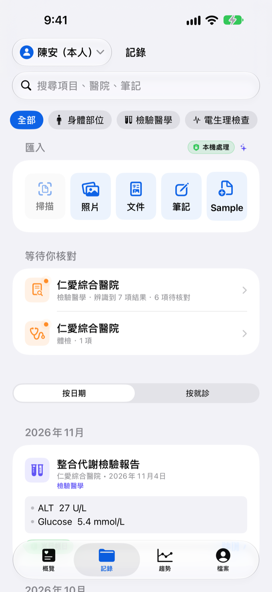
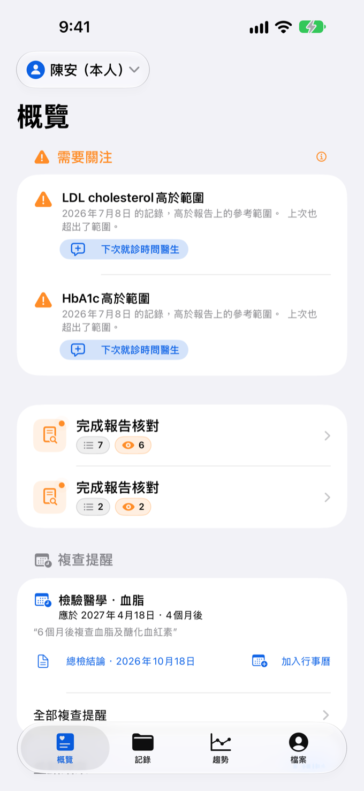
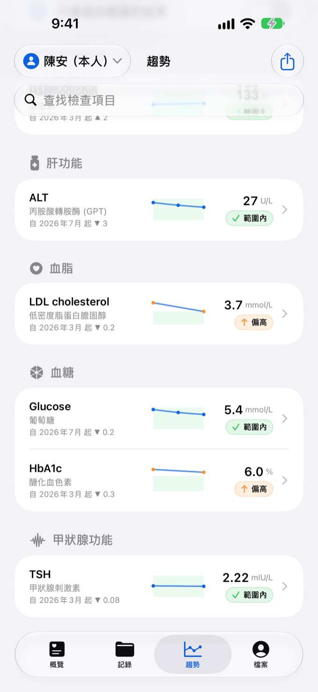

報告與健檢整理
紙本報告拍進來，結構化檔案整理好。
支援相機掃描、照片選取或匯入 PDF 檔案。多頁綜合健檢報告會自動依科別歸類，紙本心電圖保留高畫質原圖以便縮放檢視；需要確認的項目會清楚標示，方便你儲存前對照原圖核對。

把散落的紙本檢驗單、健檢報告、影像說明與心電圖，整理成清晰可查的家庭檔案——安心保存在你的裝置上。

Med-X 概覽頁：近期關鍵指標、用藥提醒與 Apple 健康彙總
無須註冊帳號，家人的健康檔案始終留在你的 iPhone 或 iPad 上。
支援相機、照片與 PDF 匯入，辨識結果可對照原圖清晰核對。
自動統一不同醫院的常用單位，在一張圖表裡看清長期變化。
帶著一頁「給醫生」參考摘要走進診間，溝通更有效率從容。
圍繞真實紙本報告、跨院追蹤與診間溝通打磨每一處細節。
支援相機掃描、照片選取或匯入 PDF 檔案。多頁綜合健檢報告會自動依科別歸類，紙本心電圖保留高畫質原圖以便縮放檢視；需要確認的項目會清楚標示，方便你儲存前對照原圖核對。

不同醫院的檢驗單位自動換算為你習慣的單位，並於曲線後方保留每份報告自身的參考範圍。結論中提到的追蹤週期也能一鍵加入行事曆提醒。

依步驟梳理本次症狀與想問醫師的問題，自動產生符合醫師閱讀習慣的一頁摘要——包含過敏警示、目前用藥、近期異常變化與報告結論，支援全螢幕展示或分享列印。

為自己、父母或孩子建立相互獨立的檔案空間。記錄在用藥物並提示重複成分，管理全家疫苗接種記錄，將過敏史與重要安全資訊放在隨時可見的位置。
融入你熟悉的系統能力，同時始終守護健康記錄的私密性。
Med-X 可離線運作於你的裝置，無須註冊帳號，不上傳雲端，也沒有任何廣告或行為追蹤。
瀏覽分步使用說明，或隨時寄信與我們交流建議與問題。